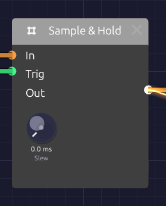

Sample & Hold
Module ID util.sample_hold · Category Utility

Each trigger freezes the input; the output holds until the next one.Sample & Hold takes a snapshot of its input each time a trigger arrives, and holds that value steady until the next trigger. A smooth, continuous signal goes in; a staircase of held steps comes out, one step per trigger.
That staircase is the sound of classic analog randomness: a filter that jumps to a new brightness on every beat, or a melody that wanders. The Slew knob softens the steps into glides.
Sample & Hold is polyphonic. Patch polyphonic cables in and each voice samples and holds its own channel. A mono trigger is shared by every voice, so all of them step together.
Inputs
| Port | Signal Type | Description |
|---|---|---|
| In | Control (Orange) | The signal to sample. Audio patches in too |
| Trig | Gate (Green) | Each rising edge (crossing 0.5 on the way up) captures the input. Takes gate cables only |
Outputs
| Port | Signal Type | Description |
|---|---|---|
| Out | Control (Orange) | The held value, steady until the next trigger |
Parameters
| Knob | Range | Default | Description |
|---|---|---|---|
| Slew | Off – 1 s | Off | Glide time to each new value. Off, the output jumps |
How it works
In: ~~~~~/\/\~~~~~/\~~~~ (moving signal)
Trig: _|‾|____|‾|____|‾|__ (rising edges)
Out: __‾‾‾‾‾‾____‾‾‾‾‾‾‾‾ (one held value per edge)
Only the rising edge counts: how long the trigger stays high makes no difference. With nothing patched into In the module holds 0.
Slew
With Slew above zero, the output glides to each new value at a steady rate instead of jumping. The knob is the time a change of 1.0 takes, so a 0.2 s Slew moves from 0 to 1 in 0.2 s and from 0 to 0.5 in 0.1 s. Small steps arrive sooner than large ones, the way a portamento circuit behaves.
Short slews (a few tens of milliseconds) take the click off stepped modulation while keeping its rhythm. Long ones turn the staircase into a slow, wandering curve.
Patches
Stepped random modulation
Sample Noise on every clock and each step lands on a value with no relation to the last:
[Noise White] ──> [Sample & Hold In]
[Clock Gate] ──> [Sample & Hold Trig]
[Sample & Hold Out] ──> [SVF Filter Cutoff]
The filter jumps to a new brightness on every clock. Add a little Slew to smooth the jumps. Patch Out into an Oscillator's V/Oct instead and you have the classic random melody; the Noise Level knob sets how far it wanders.
A fast oscillator sampled by a slower clock does a similar job with a pattern you can hear. Tune it to a frequency with no simple relation to the clock (Saw, Oct +2, Fine a few cents off) and every sample lands at a different point in its cycle.
Stepped LFO
Sample a slow LFO with a faster clock and it climbs and falls in steps:
[LFO Out] ──> [Sample & Hold In] (LFO Rate 0.2 Hz)
[Clock Gate] ──> [Sample & Hold Trig] (Clock Div 1/16)
[Sample & Hold Out] ──> [Oscillator V/Oct]
Into V/Oct, this gives a gliding arpeggio of unquantized pitches. Run it through an Attenuverter first to narrow the range.
Hold a value per note
Trigger from a keyboard gate and each note gets a fresh value that stays put while the key is held:
[LFO Out] ──> [Sample & Hold In]
[Keyboard Gate] ──> [Sample & Hold Trig]
[Sample & Hold Out] ──> [SVF Filter Cutoff]
Every note sounds a little different, like a player who never strikes the same way twice. In a polyphonic patch, feed Trig from Poly MIDI's Gate and each voice holds its own value.
Gliding steps
Raise Slew to 0.1–0.3 s on any of the patches above and the steps become smooth curves that still move in time with the clock.
Related modules
- Noise: the classic signal to sample
- Clock: steady triggers
- LFO: a slow signal to sample
- Attenuverter: scale the held values to a useful range
- Quantizer: snap held values to the notes of a scale
- Step Sequencer: stepped values you choose yourself